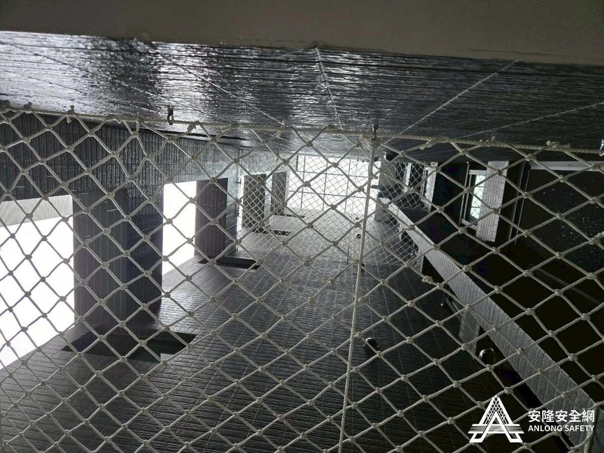
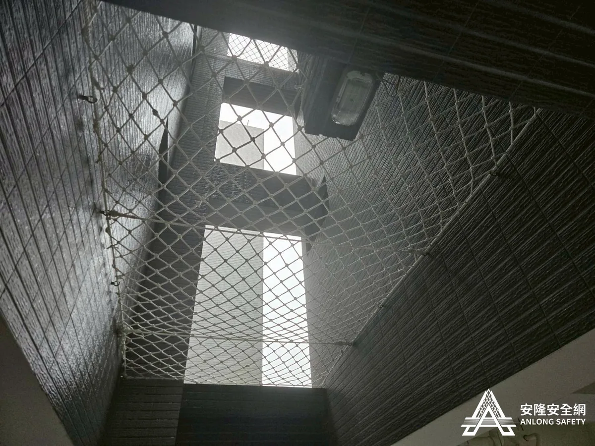
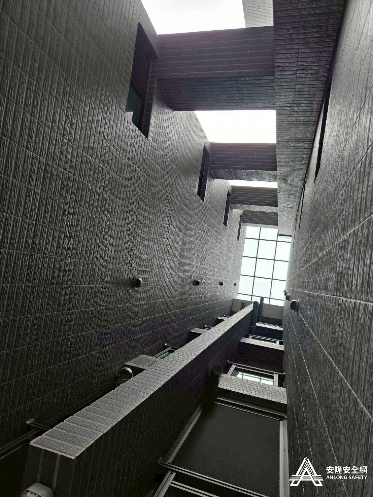

南投三十而立第一期社區 天井安全網
南投市三十而立第一期社區天井安全網，特多龍 7mm 承重 800 公斤，遠優於法規 150 公斤標準。



施工說明
本案為南投市三十而立第一期社區的天井安全網工程，使用白色特多龍 7mm 線徑、10×10cm 網目——依 CNS14252 測試可承受 800 公斤以上拉力，是我們承重規格最高的常用網材之一。
安裝位置於 2 樓及 4 樓，完全符合 CNS14252 規定：離地超過 2 米安裝一件、間隔 7 米高度內加裝一件。承重能力遠優於法規 150 公斤的最低標準，固定點均為壁虎、每 75–85 公分固定一組，給社區住戶超規格的安全保障。
CNS14252 國家標準
本公司所有安全網均依 CNS14252 國家標準進行拉力測試。安全網攔截高度不得超過 7 公尺，安裝後中心點垂墜量控制於短邊長度之 20%–25%，載重後最大垂墜量不超過短邊長度之 75%。